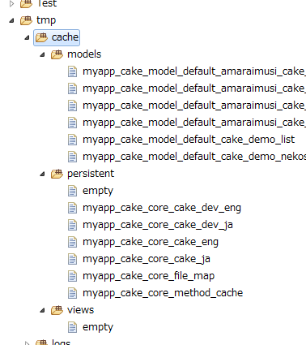
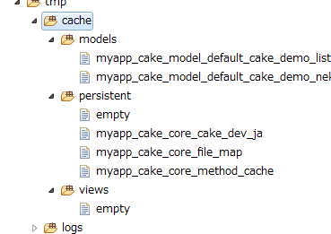
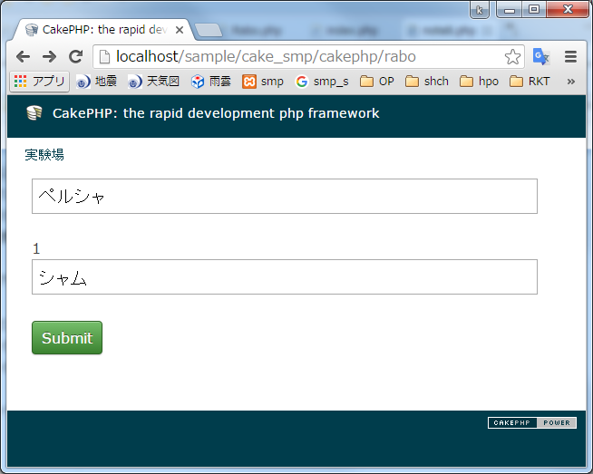

セッションの保存先をDBへ
なぜセッションデータをDBに保存するのか？
通常、セッションは指定フォルダ※1にファイル単位で保存される。セッションデータはすぐに溜り、ファイル数は膨大になる。
膨大になるのであれば、ファイルよりDBで管理したほうが適切と言える。
また、デフォルトのままだとWEBサーバーが複数台存在する場合に問題が起こる。
WEBページにアクセスするとき、複数のサーバーから任意のサーバーが割り当てられるのだが、 その割り当てられたサーバーにのみ、セッションファイルは保存される。
もう一度アクセスしたとき、別のサーバーが割り当てられることがあるが、その場合セッションファイルはないので、セッションが効かなくなる現象が起こる。
セッションデータを一つのDBテーブルで管理すれば、こうした問題は起こらない。
設定方法
DBにcake_sessionsテーブルを作成
テーブル生成SQLCREATE TABLE IF NOT EXISTS `cake_sessions` ( `id` varchar(255) NOT NULL DEFAULT '', `data` text NOT NULL, `expires` int(11) DEFAULT NULL, `modified` timestamp NULL DEFAULT CURRENT_TIMESTAMP ON UPDATE CURRENT_TIMESTAMP COMMENT '更新日時' ) ENGINE=MyISAM DEFAULT CHARSET=utf8 COMMENT='セッション保存用';
bootstrap.phpにコードを記述
「app/Config/bootstrap.php」ファイルの適当な場所に以下のコードを記述すればよい。
Configure::write('Session', array(
'defaults' => 'database',
'cookie' => 'SID',
'timeout' => 259200,
'ini' => Array(
'session.cookie_lifetime' => 2580000,
'session.gc_maxlifetime' => 2580000,
'session.gc_probability' => 1,
'session.gc_divisor' => 100
)
));
メンテナンス
ユーザーアクセスが多いほど、セッションデータは膨れ上がっていくので、定期的にセッションデータは削除すると良い。すぐに数千万件のレコード数になる場合、削除するのに時間がかかりたいへんである。 MySQLのパーティション機能を使うとこの問題を解決できる。
パーティションされたテーブルをDROPすれば削除は一瞬である。
参考:CakePHP で Session の保存先にデータベースを使用する方法
キャッシュクリア
「app/tmp/cashe/」配下のキャッシュファイル群をクリアできる。キャッシュをクリアするコード
$config_list = Cache::configured();
foreach ($config_list as $value) {
Cache::clear(false, $value);
}
clearCache();
キャッシュファイルのクリア前とクリア後を比較
| クリア前 | クリア後 | |
|  | キャッシュクリア→ |
 |
参照
デバッグモードの取得 | Configure::read('debug');
現在のデバッグモードを数値で取得できる。デバッグモードが0であるならデバッグモードはOFFとなっている。
0以外（通常は2）の場合、デバッグモードである。
デバッグモードをONにするとページ下部にSQLのダンプと、デバッグ用のダンプ出力が表示される。 【ダンプ出力例→Debugger::dump('hello world');】
デバッグモードを取得するコード
$debug_mode=Configure::read('debug');//デバッグモード取得 0:実務モード 2:デバッグモード
//出力例 $debug_mode → 2
デバッグモードの設定
デバッグモードの設定はcore.phpファイルにて設定できる。core.phpにてデバッグモードをONに設定する例
Configure::write('debug', 2);// 0:デバッグモードOFF 2:デバッグモードON
セキュリティシードの変更 | Security.salt | Security.cipherSeed
CakePHP 2.4.x以上である場合、セキュリティシードを変更しなければならない。セキュリティシードは「app/config/core.php」で変更する。
変更箇所は2か所ありSecurity.saltとSecurity.cipherSeedの値を任意の値に書き換える。
Configure::write('Security.salt', 'DYhG93b0qyJfIxfs2guVoUubWwvniR2G0FgaC9mi');
↓任意のコードに変更
Configure::write('Security.salt', 'Neko2E3WoAgerunara0141NoW0Ne123456789999');
Configure::write('Security.cipherSeed', '76859309657453542496749683645');
↓任意の数値に変更
Configure::write('Security.cipherSeed', '98765416451431778414612416733');
変更しなかったら起こるエラー
上記の設定を行わなかった場合、以下のエラーが表示されることがある。Security.saltの値を変更しなかった場合のエラー
Notice (1024): Please change the value of 'Security.salt' in APP/Config/core.php to a salt value specific to your application. [CORE/Cake/Utility/Debugger.php, line 845]
Security.cipherSeedの値を変更しなかった場合のエラー
Notice (1024): Please change the value of 'Security.cipherSeed' in APP/Config/core.php to a numeric (digits only) seed value specific to your application. [CORE/Cake/Utility/Debugger.php, line 849]
定数の使い方
-
「app/Config/bootstrap.php」を開き、任意の場所に「config('animal');」を記述する。
bootstrap.php
config('animal'); -
「app/Config」に定数を記述するphpファイルを、任意の名前で作成する。
phpファイルを新規作成 → app/Config/animal.php
-
定数ファイル（animal.php)を開き、定数を記述する。
define('NEKO','ネコ'); - 以上で定数「NEKO」がプロジェクト内のどこでも使用可能になる
関数の入れ子をするとバグ：Class declarations may not be nested in ...
関数を入れ子にしすぎるとバージョンによってはエラーになる。下記の例では「Cake varsion:2.2.1」のバージョンでエラーが起こる。バージョン「Cake varsion:2.4.7」ではエラーは起こらず。
if(empty(trim($ent2['contact_no']))){
continue;
}
画面には下記のエラーだけが表示されるので、原因が分かりづらい。
Fatal error: Class declarations may not be nested in /home/okinawa/lib/php/Cake/Error/ExceptionRenderer.php on line 54
しかし、「app/temp/logs/error.log」に詳細なエラーの個所が記載されている。
「app/temp/logs/error.log」の例
2016-02-16 20:35:25 Error: Fatal Error (64): Can't use function return value in write context in [/home/xxx/app/Controller/XxxController.php, line 235] 2016-02-16 20:35:25 Error: [FatalErrorException] Can't use function return value in write context
解決方法
以下のように関数は入れ子にしないようにすること。
$contact_no = trim($ent2['contact_no']);
if(empty($contact_no)){
continue;
}
アクションと関連付けるビューを変更する
ソースコード
コントローラのcat_run_awayアクションはビューにrun_away.ctpを用いる場合
public function cat_run_away(){
$this->render('run_away');//ビューはrun_awayを使う
}
IN句条件の指定方法
conditionsのフィールドに配列を渡すとIN句検索となる。ソースコード
$texts =array('kani','yagi','tori');//IN句条件
$res = $this->find(
'all',
array(
'conditions' => array('text1' => $texts)
)
);
実行されるSQL
SELECT * FROM TestA WHERE text1 IN ('kani', 'yagi', 'tori');
セッションが不安定になる問題
IE8、Android,リダイレクト、存在しない画像パス、セキュリティレベルなどが原因で、セッションが切れることがある。対処法1:ユーザーエージェントを切る
core.php
Configure::write('Session.checkAgent', false);
※ただしIE8 などでポップアップ窓を開いたとき、別セッションが始まる可能性がある。対処法2:セッションのキー名を変えてみる。
対処法3:存在する画像パスのみにする。もしくはImg系のヘルパーは使わない。
対処法4:セキュリティレベルを下げてみる。
参照リンク
複数のテキスト入力フォームを配列として定義する
フォーム要素を配列にするときは、name属性に「フィールド名.配列要素番号」を指定する。ビュー
<?php
echo $this->Form->create('Rabo', array('url' => true ));
echo $this->Form->input('neko_name.0', array(
'value' => 'ペルシャ',
));
echo $this->Form->input('neko_name.1', array(
'value' => 'シャム',
));
echo $this->Form->submit('Submit', array(
'name' => 'btn1',
));
echo $this->Form->end()
?>

HTMLソースで見たとき
<input name="data[neko_name][0]" value="ペルシャ" type="text" id="neko_name0"> <input name="data[neko_name][1]" value="シャム" type="text" id="neko_name1">
コントローラ
// Submitボタンが押された時の処理
if($this->request->data){
Debugger::dump($this->request->data);
}
「$this->request->data」の中身
Submitボタンを押したときの出力array( 'btn1' => 'Submit', 'neko_name' => array( (int) 0 => 'ペルシャ', (int) 1 => 'シャム' ) )